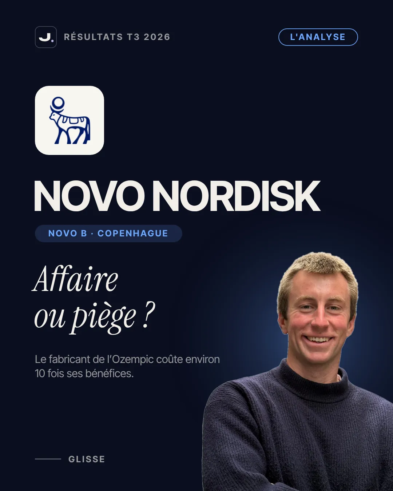
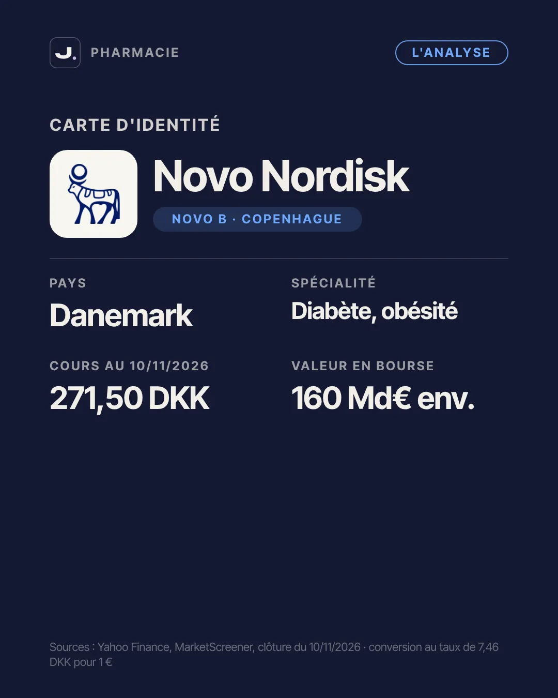
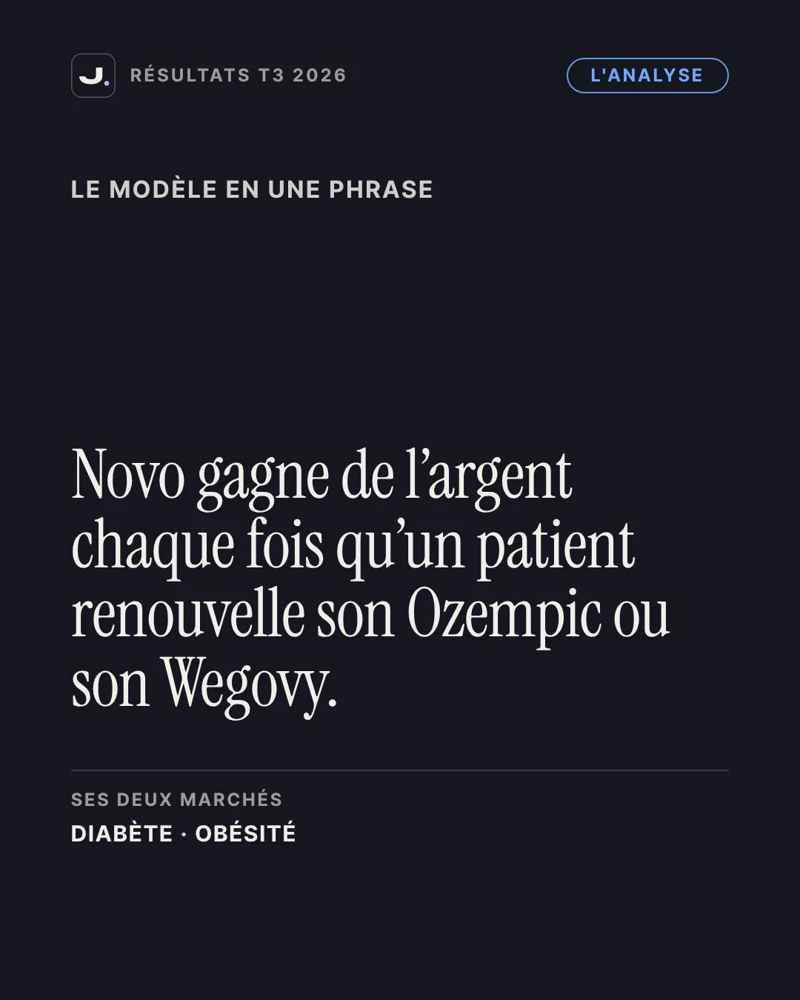
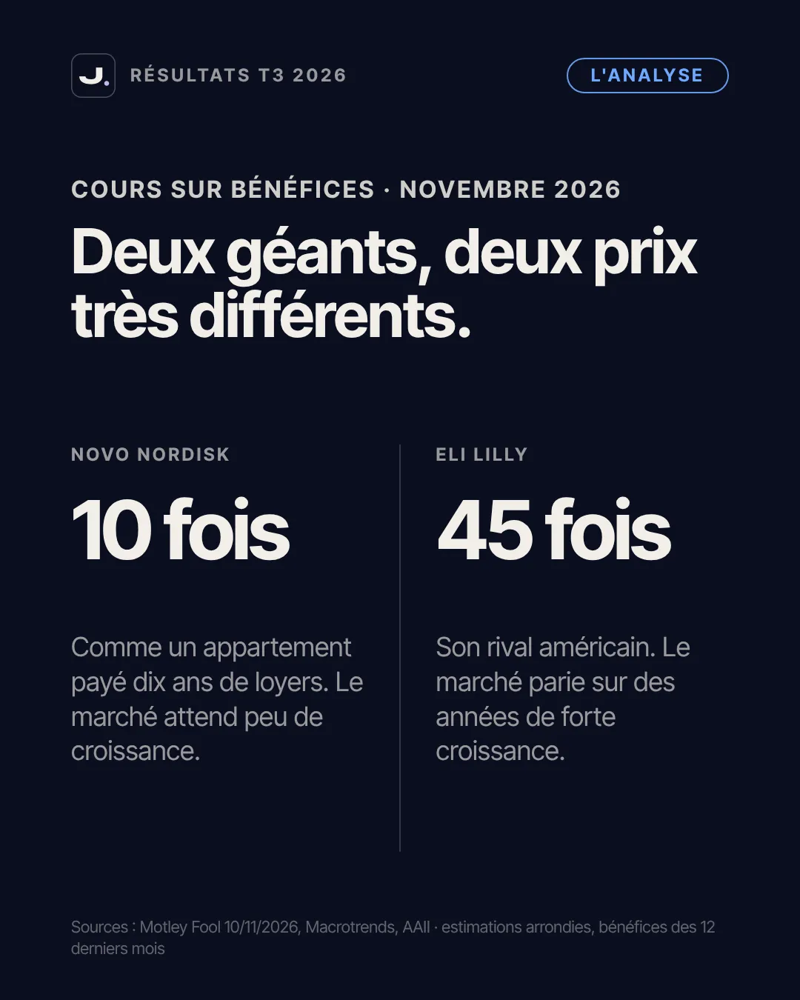
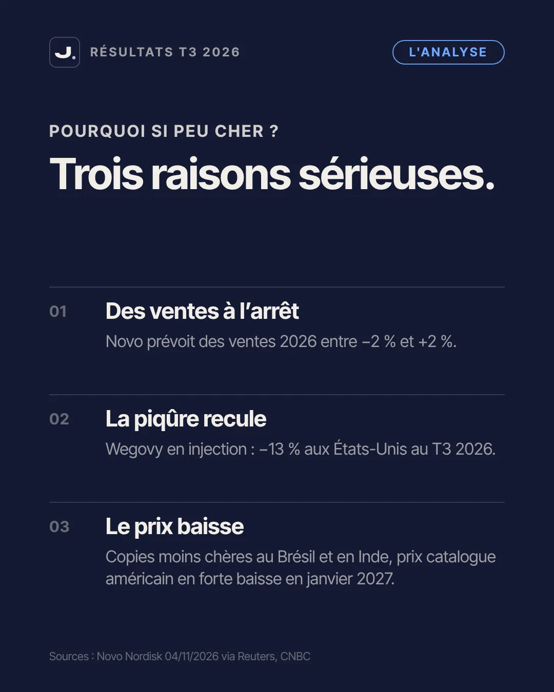
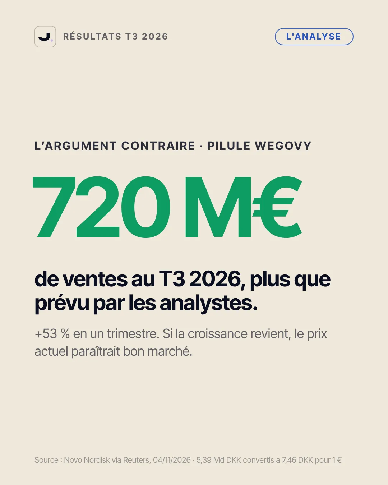
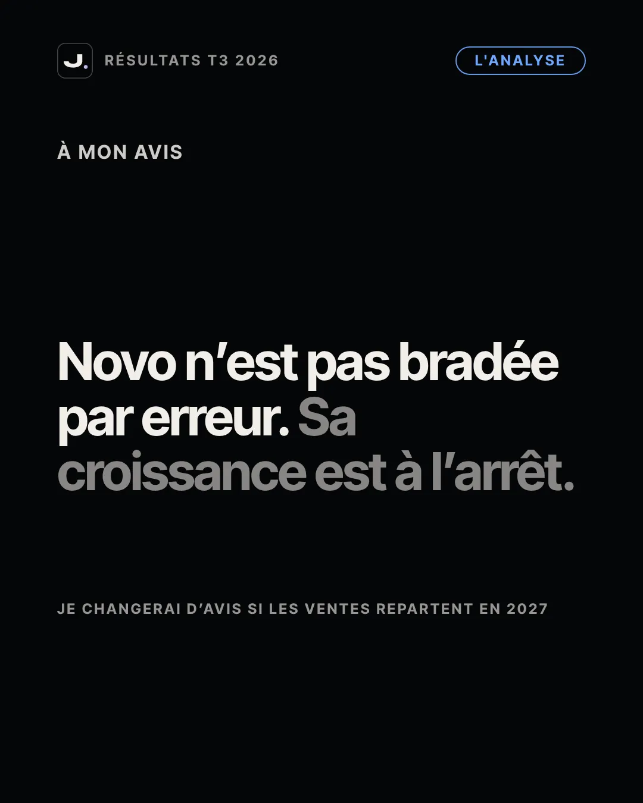
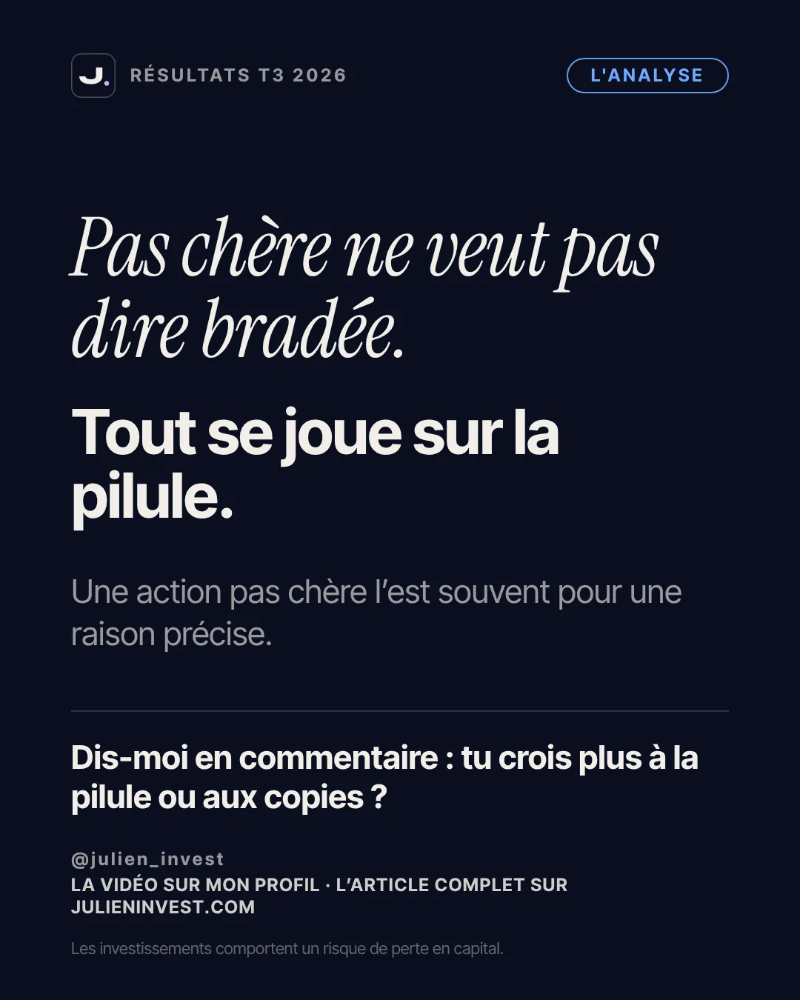

Cet article approfondit mon carrousel et ma vidéo de la semaine. Si les notions de bénéfice ou de PER sont nouvelles pour toi, lis d'abord mon guide sur l'analyse fondamentale.

- La vraie question : bonne affaire ou piège ?
- Comment Novo Nordisk gagne de l'argent
- Ce que le prix de l'action suppose, expliqué simplement
- Les preuves : pourquoi le marché ne croit plus à la croissance
- Le risque principal : une guerre des prix
- L'argument contraire le plus fort : la pilule Wegovy
- Mon verdict, et ce qui me ferait changer d'avis
- La leçon pour ton épargne
- Passer à l'action
- Le carrousel en images
- Questions fréquentes
La vraie question : bonne affaire ou piège ?
Novo Nordisk, c'est le laboratoire danois derrière l'Ozempic et le Wegovy, les traitements contre le diabète et l'obésité dont tout le monde a entendu parler. Pendant des années, c'était l'une des histoires préférées de la bourse européenne. Aujourd'hui, l'ambiance a complètement changé : début novembre 2026, son action se paie environ 10 fois ses bénéfices des douze derniers mois, alors que son grand rival américain, Eli Lilly, se paie environ 45 fois les siens (estimations arrondies de Motley Fool, Macrotrends et AAII, entre le 6 et le 10 novembre 2026).
Quand une entreprise aussi connue et aussi rentable devient soudain beaucoup moins chère que son concurrent direct, une question se pose naturellement : est-ce que le marché exagère, ou est-ce qu'il a vu quelque chose que les chiffres d'hier ne montrent pas encore ? C'est exactement ce que je veux trancher ici, après les résultats du troisième trimestre publiés le 4 novembre 2026. Je te préviens d'emblée : ce qui suit est une analyse et une opinion signée, pas une recommandation. Je ne te dirai jamais d'acheter ou de vendre une action.
Si tu débutes, commence par mon guide sur l'analyse fondamentale : il explique les notions de bénéfice, de marge et de valorisation que j'utilise dans cet article.
Comment Novo Nordisk gagne de l'argent
Le modèle tient en une phrase : Novo Nordisk gagne de l'argent chaque fois qu'un patient renouvelle son traitement. Un patient diabétique ou en surpoids qui suit un traitement à base de sémaglutide, la molécule de l'Ozempic et du Wegovy, ne l'achète pas une seule fois. Il le reprend chaque mois, parfois pendant des années. C'est un peu un abonnement : tant que le patient continue, l'argent rentre.
Ce modèle a deux grandes forces. La première, c'est la récurrence : les ventes d'un mois ressemblent à celles du mois précédent, ce qui rend l'entreprise prévisible. La seconde, c'est la marge : un médicament protégé par un brevet se vend bien plus cher qu'il ne coûte à fabriquer. Selon Motley Fool, la marge opérationnelle de Novo tourne autour de 45 %, contre environ 50 % pour Eli Lilly. Autrement dit, sur 100 euros de ventes, il reste environ 45 euros une fois payés la fabrication, la recherche et les commerciaux.
Mais ce modèle a aussi un point faible, et c'est tout le sujet : il repose sur le prix. Un brevet ne dure pas éternellement, les autorités de santé négocient, et les concurrents arrivent. Quand le prix baisse, chaque patient rapporte moins, même si le nombre de patients reste stable.
Ce que le prix de l'action suppose, expliqué simplement
Le cours sur bénéfices, qu'on appelle aussi PER, compare le prix de l'action aux bénéfices de l'entreprise. Un PER de 10 veut dire que tu paies l'action environ 10 fois ce que l'entreprise gagne en un an, pour chaque action.
L'image de l'appartement
Imagine un appartement qui rapporte 10 000 euros de loyers par an. Si on te le vend 100 000 euros, tu paies 10 ans de loyers. Si on te le vend 450 000 euros, tu paies 45 ans de loyers. Personne ne paie 45 ans de loyers sans penser que les loyers vont fortement augmenter. Et à l'inverse, si un appartement se vend seulement 10 ans de loyers, c'est souvent que les acheteurs craignent que ces loyers baissent ou que l'immeuble ait un problème.
Le calcul appliqué à Novo
C'est exactement la situation de Novo face à Lilly. Avec un PER d'environ 10, le marché paie Novo comme une entreprise dont les bénéfices ne grandiront presque plus. Avec un PER d'environ 45, il paie Lilly comme une entreprise qui va encore beaucoup grandir. Ce n'est pas une erreur de calcul du marché : c'est un pari différent sur l'avenir des deux entreprises.
Une précision honnête sur ce chiffre de 10
Le PER d'environ 10 est calculé sur les bénéfices des douze derniers mois. Or ces bénéfices sont flattés en 2026 par un gain ponctuel : la reprise d'une provision liée au programme américain 340B, un dispositif de remises aux hôpitaux. Sur les neuf premiers mois de 2026, les ventes publiées atteignent 254 506 millions de couronnes danoises, contre 227 746 millions une fois ce gain retiré. Sur les bénéfices attendus, le multiple serait plutôt d'environ 11 selon Motley Fool. L'ordre de grandeur ne change pas : Novo reste payée environ quatre fois moins cher que Lilly par rapport à ses bénéfices.
Pour te faire une idée de la valeur totale : le 10 novembre 2026, l'action Novo Nordisk B a clôturé à 271,50 couronnes à Copenhague, ce qui valorise l'entreprise autour de 1 200 milliards de couronnes, soit environ 160 milliards d'euros au taux de 7,46 couronnes pour un euro.
Les preuves : pourquoi le marché ne croit plus à la croissance
1. L'entreprise prévoit elle même des ventes à l'arrêt
Le 4 novembre 2026, Novo a relevé sa prévision pour la troisième fois de l'année. Bonne nouvelle en apparence, sauf que la nouvelle fourchette reste très modeste : des ventes ajustées 2026 comprises entre moins 2 % et plus 2 % à taux de change constants, contre une baisse de 6 % à 0 % auparavant. Même après relèvement, l'entreprise s'attend donc à une année plate. Au troisième trimestre seul, les ventes ajustées ont progressé de 4 % à taux de change constants, à 79,2 milliards de couronnes.
2. La piqûre recule aux États-Unis
Aux États-Unis, son marché le plus rentable, les ventes de Wegovy en injection ont reculé de 13 % à taux de change constants au troisième trimestre 2026. L'ensemble des ventes de Wegovy aux États-Unis, pilule comprise, progresse de 21 % : c'est la pilule qui compense la piqûre.
3. Le prix baisse partout
La protection du sémaglutide a expiré en 2026 au Canada en janvier, puis en Inde et au Brésil en mars. En Inde, des fabricants locaux ont lancé des copies jusqu'à 80 % moins chères, et Novo perd des parts de marché au Brésil. Aux États-Unis, Novo a annoncé dès le 24 février 2026 une baisse de son prix catalogue au 1er janvier 2027, d'environ 50 % pour le Wegovy et 35 % pour l'Ozempic. Attention, il s'agit du prix catalogue, avant les remises négociées : le prix réellement payé baisse moins. Mais la direction est claire.
Le risque principal : une guerre des prix
Si je ne devais retenir qu'un risque, ce serait celui là : le prix par patient. Novo peut très bien continuer à gagner des patients et voir ses ventes stagner, parce que chaque patient rapporte moins. C'est ce qu'on observe déjà au Canada, où l'entreprise indique des prix réalisés en baisse avec des volumes à peu près stables.
Ce risque est amplifié par la concurrence d'Eli Lilly, très puissante sur le même marché de l'obésité, et par la pression politique sur le prix des médicaments aux États-Unis. Même la pilule Wegovy, qui marche bien aujourd'hui, pourrait voir son prix baisser si la concurrence s'intensifie. Ce point reste une analyse, pas une certitude : personne ne connaît le niveau des prix en 2027.
Il y a aussi des signaux plus discrets à surveiller. Le directeur financier Karsten Munk Knudsen quitte l'entreprise fin décembre, et la banque Jefferies a noté qu'un effet prix ponctuel d'environ 2 milliards de couronnes avait aidé le trimestre. Aucun de ces éléments n'est grave en soi, mais ils invitent à ne pas lire ce trimestre comme un retournement acquis.
L'argument contraire le plus fort : la pilule Wegovy
Je veux présenter honnêtement l'argument d'en face, parce qu'il est sérieux. La nouvelle pilule Wegovy décolle : elle a rapporté 5,39 milliards de couronnes au troisième trimestre 2026, soit environ 720 millions d'euros, en hausse de 53 % sur le trimestre précédent et au dessus des 4,62 milliards attendus par les analystes interrogés par Reuters. Pour beaucoup de patients, un comprimé est plus simple qu'une injection, ce qui peut élargir le marché.
Surtout, un PER d'environ 10 suppose presque aucune croissance. Si les ventes repartent ne serait ce qu'un peu, le prix actuel pourrait paraître bon marché avec le recul. Novo prépare aussi le lancement de CagriSema, son prochain traitement contre l'obésité, attendu début 2027 aux États-Unis s'il est autorisé. Et l'entreprise reste très rentable. C'est pour ça que certains investisseurs voient dans le prix actuel une opportunité. Je ne balaie pas cet argument : je dis seulement qu'il repose sur une condition qui n'est pas encore remplie.
Mon verdict, et ce qui me ferait changer d'avis
À mon avis, Novo Nordisk n'est pas bradée par erreur. Son prix bas reflète une croissance à l'arrêt, que l'entreprise prévoit elle même, et une pression sur les prix qui va s'accentuer en 2027. Elle ne deviendrait une affaire que si la pilule Wegovy compensait durablement la baisse du prix des piqûres. Aujourd'hui, la pilule compense en partie, mais les ventes totales restent plates.
Ce qui me ferait changer d'avis est simple et vérifiable : des ventes totales qui repartent nettement à la hausse en 2027, malgré les baisses de prix américaines. Le premier rendez-vous sera la prévision 2027, publiée avec les résultats annuels début 2027. Si elle annonce une vraie croissance, le marché aura probablement été trop pessimiste, et je le dirai.
Je le répète : c'est une opinion sur la question posée, pas un conseil. Elle ne dit pas ce que toi, tu dois faire de ton argent, qui dépend de ta situation, de ton horizon et de ton goût pour le risque.
La leçon pour ton épargne
Une action pas chère l'est souvent pour une raison précise. Un PER bas n'est pas une promesse de bonne affaire : c'est le signe que le marché attend peu de croissance. La vraie question est toujours de savoir si le marché a raison. Pour y répondre, cherche la raison du prix bas, puis demande toi ce qui devrait arriver pour qu'elle disparaisse.
Les erreurs fréquentes face à une action qui a beaucoup baissé
- Comparer au plus haut historique : une action qui a perdu beaucoup n'est pas « en soldes » pour autant, ses perspectives ont peut être changé.
- Regarder le PER seul : il faut toujours le mettre en face de la croissance attendue.
- Oublier les éléments ponctuels : un gain exceptionnel peut faire paraître une action moins chère qu'elle ne l'est, comme ici avec la reprise de provision 340B.
- Tout miser sur une seule histoire : même une entreprise excellente peut traverser plusieurs années difficiles. Mon article sur le stock picking explique pourquoi choisir des actions une par une est plus risqué qu'il n'y paraît.
Les limites de cette analyse
Les PER cités sont des estimations arrondies de sites spécialisés, qui diffèrent légèrement selon la date et la méthode. Les chiffres de l'entreprise viennent de son communiqué du 4 novembre 2026, repris par Reuters, car les sites officiels n'étaient pas accessibles au moment de la rédaction. Les conversions en euros utilisent le taux pivot de 7,46 couronnes pour un euro. Enfin, les performances passées ne préjugent pas des performances futures. Si tu veux voir l'effet du temps sur un investissement régulier et diversifié, teste le simulateur d'intérêts composés.
Passer à l'action
Avant de t'intéresser à une action en particulier, commence par savoir quel investisseur tu es : ton horizon, ta tolérance aux baisses et tes objectifs comptent plus que n'importe quel PER. Fais le test gratuit de profil d'investisseur, il prend quelques minutes.
Si tu n'as pas encore de compte pour investir, mon comparateur de courtiers t'aide à choisir où ouvrir un PEA ou un compte titres selon les frais et ton profil. Transparence : certains liens de cette page sont des liens de parrainage, qui peuvent me rapporter une commission sans surcoût pour toi. Ils ne changent rien à mon analyse, et cet article n'est une incitation à acheter aucune action ni aucun actif.
Le carrousel en images
Le résumé de cet article en 8 slides, à enregistrer ou à partager.







Un nouveau sujet chaque lundi, vendredi et dimanche : suis la série sur Instagram · TikTok · YouTube.
Questions fréquentes
Pourquoi l'action Novo Nordisk est elle si peu chère ?
Parce que le marché attend peu de croissance : Novo prévoit elle même des ventes ajustées 2026 entre moins 2 % et plus 2 % à taux de change constants, les copies du sémaglutide arrivent dans plusieurs pays et son prix catalogue américain baisse au 1er janvier 2027.
Que veut dire un PER de 10 ?
Cela veut dire que l'action se paie environ 10 fois les bénéfices annuels de l'entreprise. C'est comme acheter un appartement au prix de dix ans de loyers : un prix bas, qui signale souvent que les acheteurs craignent une baisse des revenus futurs.
Combien a rapporté la pilule Wegovy au troisième trimestre 2026 ?
5,39 milliards de couronnes danoises, soit environ 720 millions d'euros, en hausse de 53 % sur le trimestre précédent et au dessus des 4,62 milliards attendus par les analystes interrogés par Reuters.
Est ce que cet article recommande d'acheter ou de vendre Novo Nordisk ?
Non. C'est une analyse et une opinion signée sur la valorisation de l'entreprise, à but éducatif. Elle ne tient pas compte de ta situation personnelle et ne constitue pas un conseil en investissement.
Tu veux la méthode complète, pas juste cet article ?
Reçois mon ebook par email : les erreurs qui coûtent le plus cher quand on débute, et la marche à suivre pour les éviter.
- Novo Nordisk se paie environ 10 fois ses bénéfices, contre environ 45 pour Eli Lilly (estimations, novembre 2026).
- Novo prévoit des ventes ajustées 2026 entre moins 2 % et plus 2 % : le marché ne croit plus à la croissance.
- Le risque principal est le prix : copies au Canada, en Inde et au Brésil, prix catalogue américain en baisse en 2027.
- L'argument contraire le plus fort : la pilule Wegovy décolle, avec environ 720 millions d'euros de ventes au T3 2026.
- Mon avis : Novo n'est pas bradée par erreur, et ce ne serait une affaire que si la pilule compensait la baisse des prix.
Sources
- Reuters, Novo Nordisk raises 2026 outlook as Wegovy pill beats forecasts (04/11/2026), reprise par MSN
- Reuters, Novo hikes outlook again as it speeds up Wegovy pill rollout (04/11/2026), reprise par Central Oregon Daily
- Reuters, Novo loses share in Brazil to cheaper generics (04/11/2026)
- Novo Nordisk, baisse du prix catalogue américain au 1er janvier 2027 (24/02/2026), via BioSpace
- CNBC, India is launching cheap weight-loss drugs (23/03/2026)
- Motley Fool, Eli Lilly vs Novo Nordisk (10/11/2026)
- Macrotrends, Novo Nordisk PE Ratio (06/11/2026)
- MarketScreener, cours et capitalisation Novo Nordisk B (10/11/2026)
Contenu éducatif, pas un conseil en investissement. Investir comporte un risque de perte en capital ; les performances passées ne préjugent pas des performances futures.
Apprends à analyser une entreprise sans te tromper de question
La formation Julien Invest t'apprend à lire les chiffres d'une entreprise et à construire un portefeuille diversifié, simple et adapté à tes objectifs.
Découvrir la formation